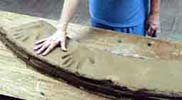

New
York-based American ceramist Neil
Tetkowski earned a BFA at the New York State College of
Ceramics at Alfred University in 1977 and an MFA at Illinois State
University in 1980. He taught at Denison University, Ohio from
1980-83, at the State University College at Buffalo from 1983-87
and at the Parsons School of Design from 1993-99. He established
a studio in Manhattan in 1994 and is currently a professor of
Fine Arts at Kean University in Union, New Jersey.
Tetkowski has become known for his environmentally
inspired large-scale clay mandala discs and performances involving
clay installations of various kinds.
 On
February 23, 1991, Tetkowski created a performance that culminated
in a bronze disk entitled Ground
War. The artist incorporated symbols of the three cultures
involved in the Gulf War. A crucifix, the star of David, and the
Arabic words for ground war were incised into the work's surface,
as well as the placement of rounds of live ammunition. In creating
a work before an audience, Tetkowski ultimately hoped to push the
dynamics of throwing a clay object. He aimed to deepen the viewer's
level of awareness to show how we relate to war. Tetkowski challenged
the expectations of his audience and by so doing extended the
parameters of their thinking. For Tetkowski, the performance was
staged "as a means to express my emotional involvement regarding
the ever ongoing crisis, all the crisis of humanity... man shooting
man... The injustice that human beings do to each other is not
over. Yesterday it was Kuwait, today it is Sri Lanka, Liberia,
the Sudan, Kashmir and 40 other wars that are not front page news.
On
February 23, 1991, Tetkowski created a performance that culminated
in a bronze disk entitled Ground
War. The artist incorporated symbols of the three cultures
involved in the Gulf War. A crucifix, the star of David, and the
Arabic words for ground war were incised into the work's surface,
as well as the placement of rounds of live ammunition. In creating
a work before an audience, Tetkowski ultimately hoped to push the
dynamics of throwing a clay object. He aimed to deepen the viewer's
level of awareness to show how we relate to war. Tetkowski challenged
the expectations of his audience and by so doing extended the
parameters of their thinking. For Tetkowski, the performance was
staged "as a means to express my emotional involvement regarding
the ever ongoing crisis, all the crisis of humanity... man shooting
man... The injustice that human beings do to each other is not
over. Yesterday it was Kuwait, today it is Sri Lanka, Liberia,
the Sudan, Kashmir and 40 other wars that are not front page news.
In 2002 Tetkowski collaborated with 100 people with
consecutive ages 1-100 in Kanazawa, Japan to create a public work
called Jedai
or 'Generations in Time'. Kanazawa typifies the traditional provincial
character and charm of old Japan yet also provides a fabulous
example of a people that maintain their traditional and ethnic
identity but actively engage in the modern world. Generations
in Time celebrates the 40th Anniversary Celebration of the Buffalo-Kanazawa
Sister City Program providing a tangible expression of communities
connecting in a peaceful progressive manner.

He
is the founder and director of the Common Ground World Project,
an international non-governmental, United Nations endorsed organization
that uses the arts and education to focus attention on global
environmental concerns. The project culminated in the World
Mandala Monument, a sculpture made from clay and sand
from every nation and exhibited at the United Nations building
in New York in 2002.
Installation
188 is a conceptual work first exhibited at the United
Nations in New York during spring of 2000 to coincide with the
creation of the World Mandala Monument. This work measures 24
feet long and features a series of glass bottles numbered 1-188
which contain earth from every country of the world. An elegant
aluminum structure securely holds the bottles.


{kind=link}
{kind=link}
{kind=link}
{kind=link}
{kind=link}
{kind=link}
{kind=link}